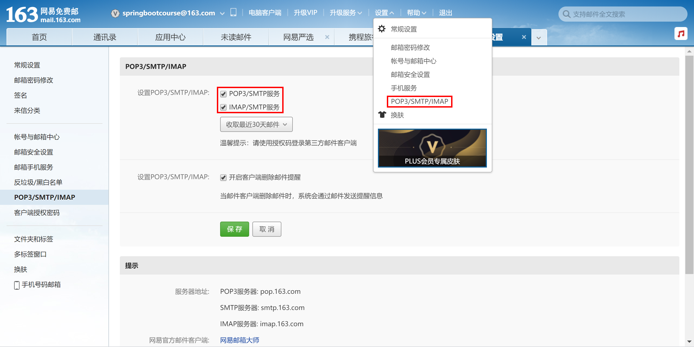
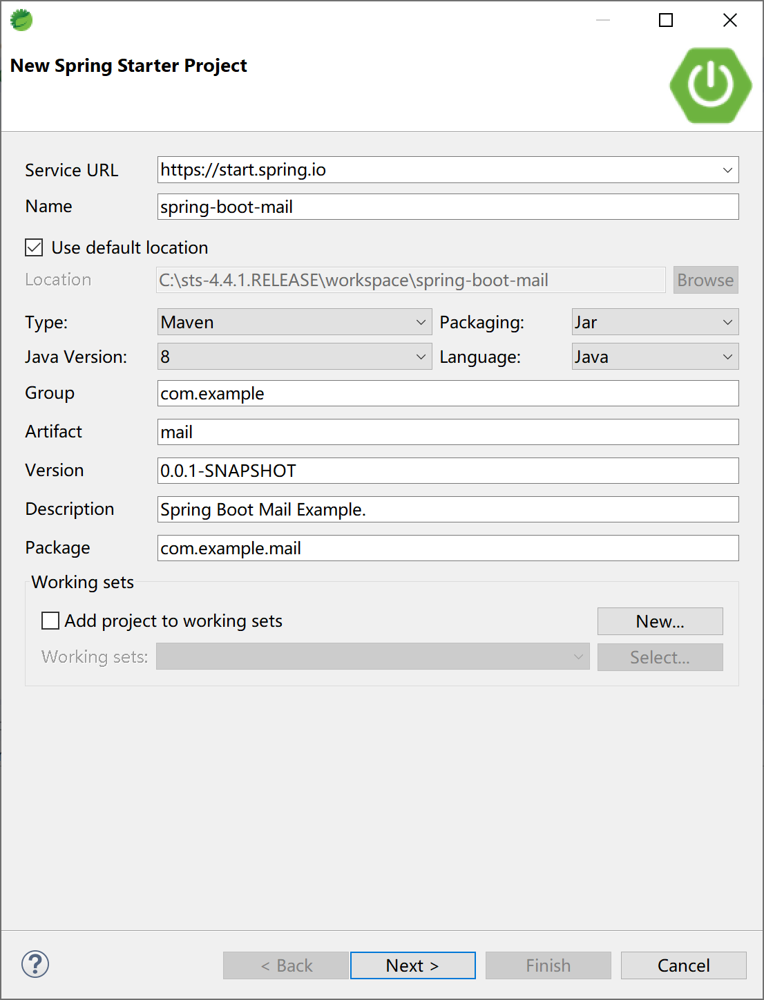
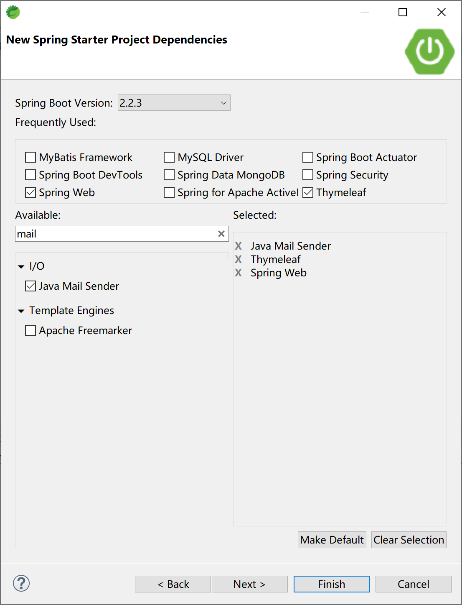
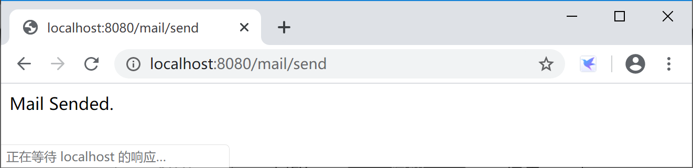
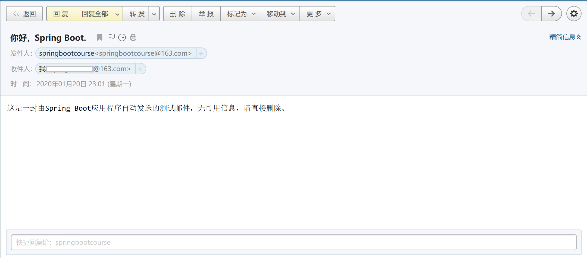

14.1 邮件发送
邮件发送，是企业开发中最经常使用到的通用功能，例如用户注册时的身份认证，审批节点任务通知，库存低报警通知邮件等。
Spring提供了org.springframework.mail.javamail.JavaMailSender接口（实现类JavaMailSenderImpl）来发送邮件，Spring Boot则提供spring-boot-starter-mail起步器依赖来完成邮件发送功能的集成。
14.1.1 邮件基本概念
在邮件发送开发中，有一些基本概念，理解这些基本概念，有助于理解如何编写应用代码及配置。
14.1.1.1 SMTP
SMTP全称为Simple Mail Transfer Protocol（简单邮件传输协议），它是一组用于从源地址到目的地址传输邮件的规范，通过它来控制邮件的中转方式。SMTP认证要求必须提供账号和密码才能登陆服务器，其设计目的在于避免用户受到垃圾邮件的侵扰。
SMTP的默认端口为25。
14.1.1.2 IMAP
IMAP全称为Internet Message Access Protocol（互联网邮件访问协议），IMAP允许从邮件服务器上获取邮件的信息、下载邮件等。IMAP与POP类似，都是一种邮件获取协议。
IMAP的默认端口为143。
14.1.1.3 POP3
POP3全称为Post Office Protocol 3（邮局协议），POP3支持客户端远程管理服务器端的邮件。POP3常用于“离线”邮件处理，即允许客户端下载服务器邮件，然后服务器上的邮件将会被删除。目前很多POP3的邮件服务器只提供下载邮件功能，服务器本身并不删除邮件，这种属于改进版的POP3协议。
POP3的默认端口为110。
14.1.1.4 IMAP和POP3的区别
两者最大的区别在于，IMAP允许双向通信，即在客户端的操作会反馈到服务器上，例如在客户端收取邮件、标记已读等操作，服务器会跟着同步这些操作。而对于POP协议虽然也允许客户端下载服务器邮件，但是在客户端的操作并不会同步到服务器上面的，例如在客户端收取或标记已读邮件，服务器不会同步这些操作。
14.1.2 注册邮箱
本示例使用163邮箱。
首先，请注册邮箱，例如springbootcourse@163.com，设置登录密码。
然后，通过https://mail.163.com/ 登录新注册的163邮箱，设置打开POP3/SMTP等邮件发送接收服务，在设置时会结合手机发送短信验证设置“授权码”。

记录好邮箱账号、密码、授权码及163邮箱服务器地址（pop.163.com，smtp.163.com，imap.163.com）以备在后续代码中配置使用。
14.1.3 集成邮件发送
首先，创建Spring Boot应用。

选择Spring Web，Thymeleaf和Java Mail Sender起步器依赖。

示例项目的主要pom依赖如下：
<dependency>
<groupId>org.springframework.boot</groupId>
<artifactId>spring-boot-starter-mail</artifactId>
</dependency>
<dependency>
<groupId>org.springframework.boot</groupId>
<artifactId>spring-boot-starter-thymeleaf</artifactId>
</dependency>
<dependency>
<groupId>org.springframework.boot</groupId>
<artifactId>spring-boot-starter-web</artifactId>
</dependency>
在application.yml文件中配置邮件发送属性：
spring:
mail:
host: smtp.163.com
port: 25
username: springbootcourse@163.com
password: 授权码，不是邮箱登录密码，切记
default-encoding: UTF-8
properties:
mail:
smtp:
auth: true
starttls:
enable: true
required: true
创建发送邮件的服务类SendMailService，在其中封装邮件发送SimpleMailMessage对象。
package com.example.mail.service;
import org.springframework.beans.factory.annotation.Autowired;
import org.springframework.beans.factory.annotation.Value;
import org.springframework.mail.SimpleMailMessage;
import org.springframework.mail.javamail.JavaMailSender;
import org.springframework.stereotype.Service;
@Service
public class SendMailService {
@Autowired
private JavaMailSender mailSender;
@Value("${spring.mail.username}")
private String from;
public String sendMail(String to, String subject, String text) {
SimpleMailMessage message = new SimpleMailMessage();
message.setFrom(from);
message.setTo(to);
message.setSubject(subject);
message.setText(text);
mailSender.send(message);
return "Mail Sended.";
}
}
创建与用户交互的控制器类SendMailController，为了简单起见，我们不从用户界面上收集邮件信息，直接在sendMail处理器方法中提供接收者，主题和邮件内容。
package com.example.mail.controller;
import org.springframework.beans.factory.annotation.Autowired;
import org.springframework.web.bind.annotation.RequestMapping;
import org.springframework.web.bind.annotation.RestController;
import com.example.mail.service.SendMailService;
@RestController
@RequestMapping("/mail/")
public class SendMailController {
@Autowired
private SendMailService sendMailService;
@RequestMapping("/send")
public String sendMail() {
String to = "xxx@163.com";//一个可用的邮件地址
String subject = "你好，Spring Boot.";
String text = "这是一封由Spring Boot应用程序自动发送的测试邮件，无可用信息，请直接删除。";
return sendMailService.sendMail(to, subject, text);
}
}
运行项目，打开浏览器，访问http://localhost:8080/mail/send，测试发送邮件。

在https://mail.163.com/ 上登录接收邮件的用户，查看是否正确收到邮件。

发送HTML格式邮件的参考代码：
public void sendHtmlMail(String subject, String content) {
//使用MimeMessage，MIME协议
MimeMessage message = mailSender.createMimeMessage();
MimeMessageHelper helper;
//MimeMessageHelper帮助我们设置更丰富的内容
try {
helper = new MimeMessageHelper(message, true);
helper.setFrom(mailConfig.getFrom());
helper.setTo(mailConfig.getRecipient());
helper.setSubject("HTML格式邮件");
helper.setText(content, true);//true代表支持html
mailSender.send(message);
} catch (MessagingException e) {//发送HTML邮件失败
e.printStackTrace();
}
}
发送带附件邮件的参考代码：
public void sendAttachmentMail(String subject, String content, File file) {
MimeMessage message = mailSender.createMimeMessage();
MimeMessageHelper helper;
try {
helper = new MimeMessageHelper(message, true);//true代表支持多组件，如附件，图片等
helper.setFrom(mailConfig.getFrom());
helper.setTo(mailConfig.getRecipient());
helper.setSubject("带附件的HTML格式邮件");
helper.setText(content, true);//true代表支持html
FileSystemResource file1 = new FileSystemResource(file);
String fileName = file1.getFilename();
helper.addAttachment(fileName, file1);//添加附件，可多次调用该方法添加多个附件
mailSender.send(message);
} catch (MessagingException e) {
e.printStackTrace();
}
}
发送带静态资源（一般指的是图片）的邮件示例代码：
public void sendInlineResourceMail(String subject, String content, String rscPath, String rscId) {
MimeMessage message = mailSender.createMimeMessage();
MimeMessageHelper helper;
try {
helper = new MimeMessageHelper(message, true);
helper.setFrom(mailConfig.getFrom());
helper.setTo(mailConfig.getRecipient());
helper.setSubject("静态资源邮件");
helper.setText(content, true);
FileSystemResource res = new FileSystemResource(new File(rscPath));
helper.addInline(rscId, res);//重复使用添加多个图片
mailSender.send(message);
} catch (MessagingException e) {
e.printStackTrace();
}
}
本小节示例项目代码：
https://github.com/gyzhang/SpringBootCourseCode/tree/master/spring-boot-mail